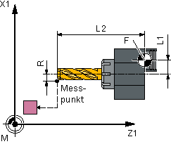
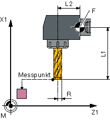
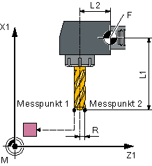
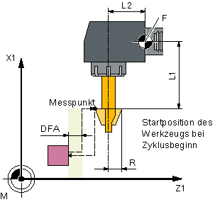
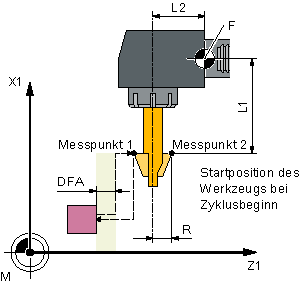
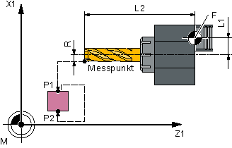
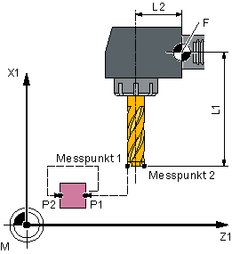
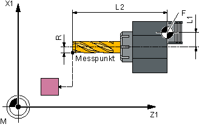
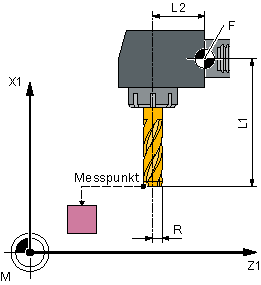
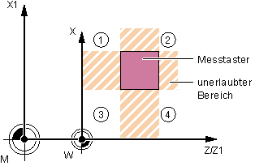

Mit dieser Messvariante kann ein Fräswerkzeug auf einer Drehmaschine vermessen werden.
Es können folgende Messungen durchgeführt werden:
Länge
Radius
Länge und Radius
Der Messzyklus prüft, ob die zu korrigierende Differenz zur alten Werkzeuglänge bzw. zum alten Werkzeugradius innerhalb eines definierten Toleranzbereiches liegt:
Obergrenzen: Vertrauensbereich TSA und Maßdifferenzkontrolle DIF,
Untergrenze: Nullkorrekturbereich TZL.
Bei Einhaltung dieses Bereichs wird die neue Werkzeuglänge in die Werkzeugkorrektur übernommen, anderenfalls bei Überschreitung eine Alarmmeldung ausgegeben. Bei Unterschreitung der Untergrenze wird nicht korrigiert.
Die Werkzeuglängenkorrektur erfolgt drehmaschinen-spezifisch. Die Längenzuordnung (L1 in X, L2 in Y) zu den Geometrieachsen erfolgt damit wie bei einem Drehwerkzeug.
Beim Messen "komplett" werden alle bestimmbaren Messgrößen (Längen L1 und L2 und Radius) ermittelt. Es wird in beiden Achsen (bei G18: Z und X) der Ebene an den Messtaster angetastet, wobei die Messung mit der 1. Achse der Ebene (bei G18: Z) beginnt.
Beim Messen "achsweise" werden die Messgrößen entsprechend der Auswahl "nur Länge (L1 oder L2)", "nur Radius" bzw. "Länge (L1 oder L2) und Radius" nur in der parametrierten Messachse der aktiven Ebene gemessen.
Es wird die Länge L1 oder L2 in der jeweilig parametrierten Messachse gemessen.
ohne Fräserumschlag | mit Fräserumschlag | |
|---|---|---|
|  Länge L2 messen |  Länge L1 messen |  Länge L2 messen Voraussetzung: Radius R muss bekannt sein. |
Es wird der Radius in der jeweilig parametrierten Messachse gemessen. Beim Messen mit Umschlag wird der Messpunkt 1 in der gewählten Achse und Fräserspindelstellung gemessen, anschließend wird das Werkzeug 180 ° gedreht und erneut vermessen. Der Mittelwert ist der Messwert.
ohne Fräserumschlag | mit Fräserumschlag |
|---|---|
|  |  |
Es wird die Länge L1 oder L2 und der Radius in der jeweilig parametrierten Messachse durch zweimaliges Antasten an zwei unterschiedlichen Seiten des Messtasters gemessen.
Länge L1 und Radius messen ohne Fräserumschlag | Länge L2 und Radius messen mit Fräserumschlag |
|---|---|
|  |  |
Beim Messen komplett werden alle Korrekturen ermittelt:
beide Längen und Radius (4 Messungen),
ist der Radius = 0 vorgegeben, so werden nur beide Längen ermittelt (2 Messungen).
Der Messzyklus generiert die Anfahrsätze zum Messtaster und die Verfahrbewegungen zum Messen von Länge 1, Länge 2 und Radius selbst. Bedingung ist eine richtig gewählte Startposition.
Beim Messen mit Umschlag wird zuerst der Messpunkt in der gewählten Achse und einer Frässpindelstellung gemäß Startwinkel SPOS vermessen. Anschließend wird das Werkzeug (Spindel) um 180 Grad gedreht und erneut vermessen.
Der Mittelwert ist der Messwert. Messen mit Umschlag bringt an jedem Messpunkt eine zweite Messung mit einer Spindeldrehung um 180 Grad zum Startwinkel. Die Korrekturwinkelangabe in SCOR wird auf diese 180 Grad aufsummiert. Damit ist eine bestimmte 2. Frässchneide auswählbar, die nicht genau um 180 Grad gegenüber der 1. Schneide versetzt ist. Mit Messen mit Umschlag können zwei Schneiden eines Werkzeugs vermessen werden. Der Mittelwert bildet die Korrekturgröße.
Axiale Stellung | Radiale Stellung |
|---|---|
|  Fräserradius in der 2. Messachse (bei G18: X) |  Fräserradius in der 1. Messachse (bei G18: Z) |
Es kann mit drehender (M3, M4) oder mit stehender Frässpindel (M5) gemessen werden.
Bei stehender Frässpindel wird diese zu Beginn auf den angegebenen Startwinkel SPOS positioniert.
| Hinweis |
Messen mit drehender SpindelIst keine Auswahl einer bestimmten Fräserschneide möglich, kann mit drehender Spindel gemessen werden. Hier muss der Anwender mit besonderer Sorgfalt Drehrichtung, Drehzahl und Vorschub vor Aufruf des CYCLE982 programmieren, um eine Beschädigung des Messtasters auszuschließen. Drehzahl und Vorschub sind entsprechend niedrig zu wählen. |
Erfahrungswerte können wahlweise berücksichtigt werden. Eine Mittelwertbildung erfolgt nicht.
Der Werkzeugmesstaster muss kalibriert sein, siehe Abgleich Messtaster (CYCLE982).
Die ungefähren Werkzeugabmessungen müssen in die Werkzeugkorrekturdaten eingegeben sein:
Werkzeugtyp: 1xy (Fräswerkzeug)
Radius, Länge 1, Länge 2.
Das zu vermessende Werkzeug muss mit seinen Werkzeugkorrekturwerten bei Zyklusaufruf aktiv sein.
Beim Fräser muss das kanalspezifische SD42950: $SC_TOOL_LENGTH_TYPE = 2 gesetzt sein (Längenverrechnung wie bei Drehwerkzeug).
Die Werkzeugspindel muss als Masterspindel deklariert sein.
Von der Startposition aus muss ein kollisionsfreies Anfahren an den Messtaster möglich sein.
Die Ausgangspositionen befinden sich außerhalb des unerlaubten Bereichs (siehe folgendes Bild).
① bis ④ | erlaubter Bereich |
Fräser messen: mögliche Ausgangspositionen in der 2. Achse der Ebene (bei G18: X)
Beim Messen "achsweise" steht die Werkzeugspitze um den Messweg gegenüber der letzten angetasteten Messfläche des Messtasters.
Beim Messen "komplett" wird das Werkzeug nach der Messung auf den Startpunkt vor Zyklusaufruf positioniert.